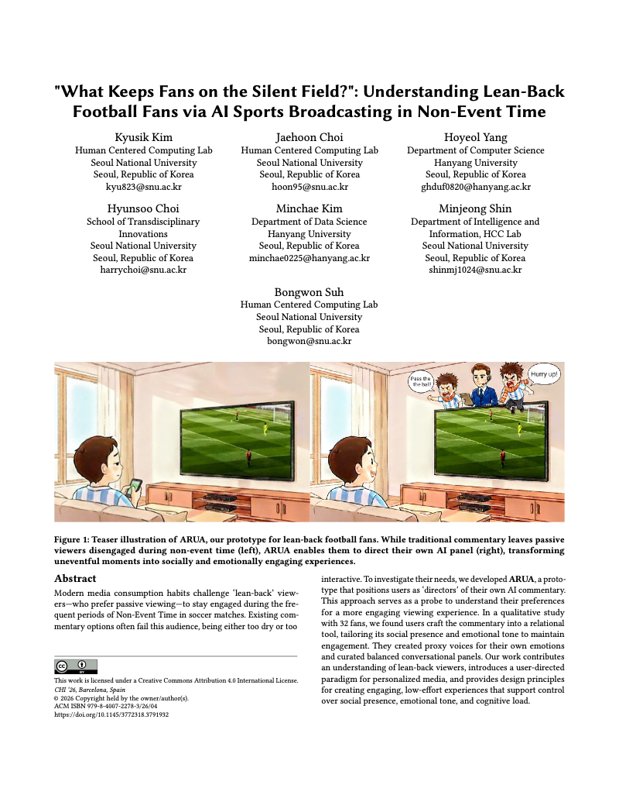
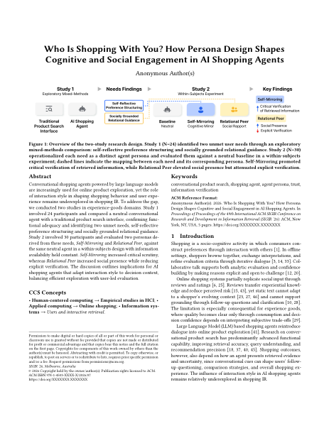
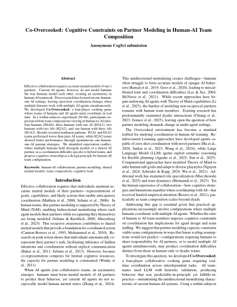
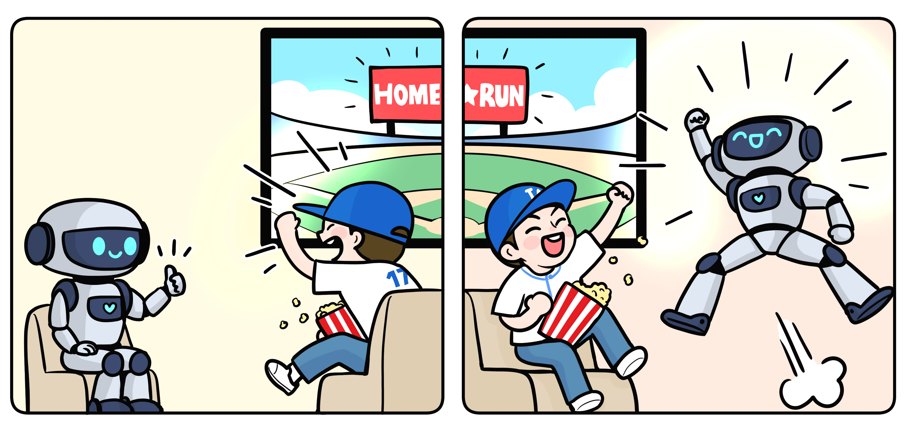
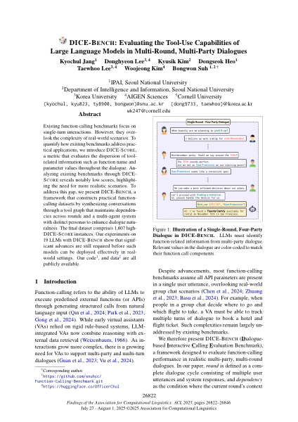
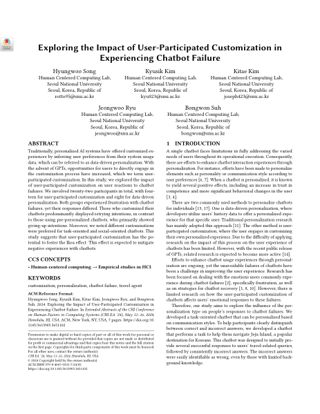
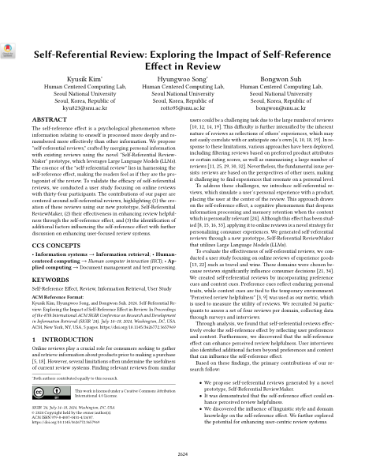

Human-AI Interaction
8 papersHow can AI agents become meaningful partners in everyday experiences? My work designs and evaluates AI companions for sports co-viewing, film appreciation, shopping, and conversational search—exploring what makes human-AI collaboration feel natural, engaging, and socially enriching.

"What Keeps Fans on the Silent Field?"
AI sports broadcasting prototype (ARUA) that lets users direct their own AI commentary, tailoring social presence and emotional tone.

Who Is Shopping With You?
How persona design shapes cognitive and social engagement when AI agents accompany users during shopping.

Co-Overcooked: Human-AI Team Composition
Partner modeling capacity constrains viable human-AI team configurations nonlinearly, revealing expectation conflicts when multiple humans model a shared AI partner.

BleacherBot: AI Sports Co-Viewing Partner
Fine-tuned LLM-based AI agent that enhances emotional engagement during baseball co-viewing through context-aware commentary.

Cinema Multiverse Lounge
Multi-agent system where users converse with AI personas of directors, actors, and audiences for richer film appreciation.

DICE-BENCH
Evaluating LLM tool-use capabilities in complex multi-round, multi-party dialogue scenarios.

Chatbot Customization & Failure
How user-participated customization affects tolerance and recovery from chatbot failures.

Self-Referential Review
Exploring how self-reference effects influence review behavior and evaluation quality.